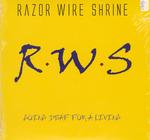

Home Artist links Label link

Razor Wire Shrine - Going Deaf For A Living
| Artist: | Razor Wire Shrine |
| Title: | Going Deaf For A Living |
| Label: | PMM PMM-0700 |
| Length(s): | 45 minutes |
| Year(s) of release: | 2004 |
| Month of review: | [08/2004] |
Line up
Chris Rodler - rhyhtm & bass guitar
Brett Rodler - drums
Mike Ohm - guitar
Tracks
| 1) | Shards | 6.26
|
| 2) | Crackling Dementia | 6.04
|
| 3) | Architecture For The Tortured Soul | 8.28
|
| 4) | Thought Residue | 6.06
|
| 5) | To Strike A Personal Chord | 8.20
|
| 6) | All Shades Of Bitter | 5.57
|
| 7) | World Of Hurt | 4.18
|
Summary
The music
Razor Wire Shrine is very much musician's music. Music that appears to be intended more for musicians, than for non musician listeners. It is generally of a technical kind, in the vein of the powertrio's. And if you consider that this is -well- a trio with power, that shouldn't be much of a surprise. If you've read reviews of mine on the subject before, you probably get a decent enough feeling where this one is gonna go...
In the range of melodic vs. technical prowess this album is leaning pretty much towards the latter. Such pleasant base melodies as are provided by Bozzio Levin Stevins, to name but a not so arbitrary PT (powertrio), were pretty much omitted on this one. The most melodic track is probably Architecture For The Tortured Soul.
Interestingly enough: if you look at the titles one gets the impression this disc was almost intended to be hard on the ear: I mean, Shards for openers...
Conclusion
So, I must say that listening to this one pretty much tired me out, and it's not even very long. I've heard a lot of chords, speed, stamina and prowess. So there definitely was a lot to listen for. One tiny thing fell a little bit short of attention, though: melody. This disc could be interesting for musicians and those into the more hard edged material. It ways a bit heavy on the stomach for most of us though.
© Roberto Lambooy